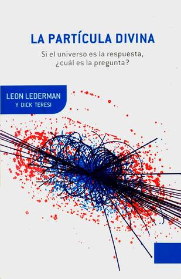

La Partícula Divina
Reseña por Jorge I. Zuluaga

Ver detalles · Ver reseña en GoodReads (necesita cuenta)
No me divertía tanto leyendo un libro de divulgación de la física como lo hice con este otro clásico. El autor, León Lederman, es un verdadero genio, no solo como físico experimental (ganador del Premio Nobel) sino también como divulgador. No me quedaron sino ganas de leer sus otros libros de divulgación. (Se supone que el libro está escrito en colaboración con otro autor, pero todo lo que leí solo me suena a Lederman).
Como su nombre lo indica (¿o no?), el libro está destinado a contar la historia de la "partícula divina" (un término muy odioso) o, como la llamaba el mismo Lederman, la "goddamn particle" o la "maldita partícula" (que es el nombre original del libro, pero que fue modificado por sugerencia del editor para evitar la susceptibilidad de lectores conservadores).
Se refiere, naturalmente, al bosón de Higgs (o campo de Higgs), propuesto originalmente en los años 1960 como parte del mecanismo responsable por "ocultar" una de las más bellas simetrías en la naturaleza: la simetría gauge electrodébil; o, en otras palabras, el hecho de que las que creemos que son dos interacciones diferentes, la interacción electromagnética y la interacción débil, en el fondo son una sola interacción mediada por cuatro tipos de partículas que viajan a la velocidad de la luz: el fotón, el zetaón y los wueones (je, je).
En este libro de 580 páginas (al menos en la edición de Drakontos de bolsillo), "La maldita partícula" hace su aparición oficial solo hasta la página 480, confirmando algo que todos los que nos dedicamos a la ciencia y hacemos docencia y divulgación sabemos: cualquier hecho de la realidad científica es mucho más contexto que dato. El dato (que existe un campo escalar que interactúa con la mayoría de las partículas dotándolas de inercia y que eso es lo que hace la diferencia entre la interacción débil y la electromagnética) es, per se, aburrido, plano, demasiado técnico. El contexto, que en este libro es una historia deliciosa que comienza con las especulaciones de los filósofos presocráticos, pasando por los siglos de la física (1600), el de la química (1700) y el de la integración entre ambas (1800), hasta llegar al extraño siglo 1900, durante el cual hackeamos los secretos de la materia y de la interacción entre sus componentes fundamentales, incluyendo la intuición de Peter Higgs y otros cuatro colegas (cuyos nombres lamentablemente han sido olvidados por la divulgación), es lo que hace al dato maravilloso y emocionante.
Si bien la historia no está contada por Higgs o sus colegas, no podría existir una alternativa mejor a que la contara uno de los más importantes físicos experimentales de la segunda mitad del siglo XX, uno que estuvo involucrado, como él mismo relata exhaustivamente (con algún dejo de sesgo personal), en algunos de los experimentos clave de la física de partículas y en uno de los más importantes laboratorios del mundo: el laboratorio Fermilab, que dirigió por muchos años.
El estilo de Lederman (y Teresi) es fresco, ágil y muuuuy entretenido. En otras reseñas he mencionado que no es común que físicos (hombres y mujeres) leamos divulgación en física (los colegas que no estén de acuerdo con esta generalización pueden comentarlo abajo). Cuando lo hacemos, tal vez somos empujados por la curiosidad o por la necesidad (como es mi caso: leí el libro como parte de la preparación de un curso divulgativo en el tema). Pero es fácil aburrirse: a nadie le gusta que le expliquen con analogías muy sencillas las ideas que le tomó años de dura academia dominar. Pero, colegas del mundo, no se engañen con "La Partícula Divina". No hay una sola página en la que no encuentren una anécdota original, una manera diferente de explicar lo que supuestamente sabemos.
Disfruté especialmente de la conversación que sostiene Lederman con Demócrito en el capítulo 2. ¡Qué diálogo más genial! No me cabe la menor duda de que, entre chanzas, Lederman termina creando aquí una de las mejores ficciones sobre lo que sería la personalidad y pensamiento del filósofo que ríe, el genio de Abdera que intuyó, 2.000 años antes de que la ciencia lo probara, la existencia del vacío y los á-tomos. El diálogo (o las referencias a Demócrito) continúa a lo largo del libro, convirtiendo la historia de la física, que termina relatando "sin querer queriendo" (como decía el Chavo del Ocho), en la búsqueda de un solo objetivo: descubrir los á-tomos de Demócrito.
Algunas citas maravillosas que he extraído de esta deliciosa lectura las he compilado en este hilo en Twitter (es la moda del momento): https://twitter.com/zuluagajorge/stat....
¿Es el libro legible para una persona que apenas comienza con la física? No solo es legible, debería ser obligatorio. Obviamente, no todo en él es comprensible. Algunos apartes realmente son oscuros y, si estaban destinados a que todos entendiéramos lo que explican sin mayores complicaciones, no lo lograron (naturalmente, después de tener una formación en física y, en especial, en física de partículas, al contrario, las explicaciones serán iluminadoras). Aún así, la lectura es tan agradable que terminas olvidando lo poco o nada que puedas entender en los apartes más oscuros.
¡No dejen de leerlo antes de que sea demasiado tarde! (aunque es una historia que se trunca con el libro a finales de los años 90, lo que cuenta todavía es relevante, pero tal vez no lo sea en unas décadas).